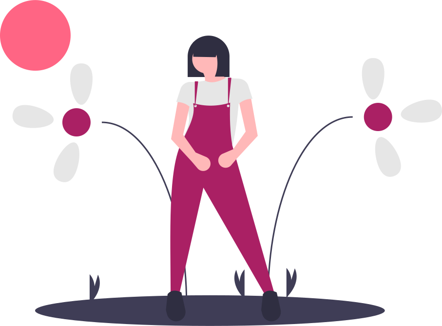

<<<<<<< HEAD
Enhanced your foods with the best shallots in Nganjuk
=======Because you deserve the best shallots in the world.
>>>>>>> 775a1c9c4bf0ceb9fba704fb26217476ace5565bWith Labda Agriculture as your source for shallots, you'll enhance your foods production with a variety of flavors and more healtier food.

What makes our shallots so special?
Our family bussines, Labda agriculture is a producer of the highest quality shallots. We are proud to produce the finest shallots in Nganjuk. Using hydroponic farming, we produce a fresher, healtier, and enviromentally friendly farming.